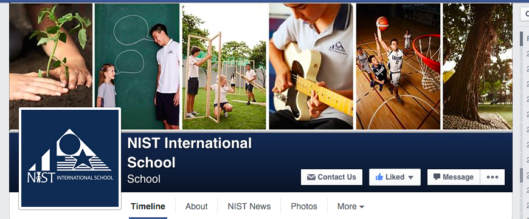
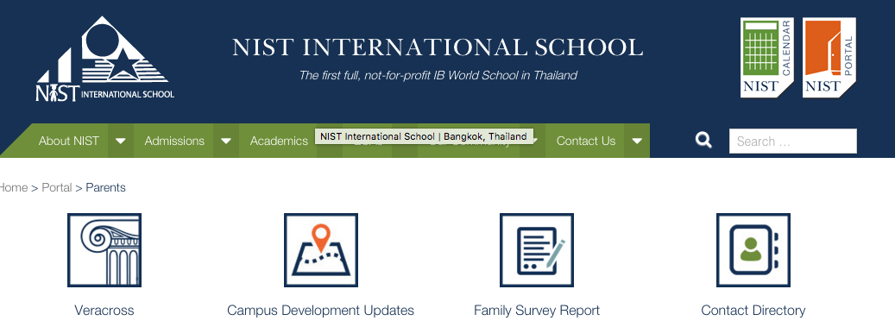

NIST Username and Password Details
Student login details are stored on an online server, where they are synchronized for use by different software programs NIST offers. This means that your NIST login can be used to access the following:
- Veracross
- NIST Portal (portal2.nist.ac.th)
- Resource Portal
- NIST Library Website
- Google Applications offered by NIST
However, School-issued Macbooks do not use the password server, and can be different from the NIST login.
To change your NIST password, open the menu on Veracross, or go to the
Tech Support Portal
For other technology-related queries, students may contact the NIST Tech Department, located in the Secondary Library.
Class Schedule and Locations
To find your class schedule, log onto
Veracross with your NIST username and password, and select
Current Class Schedule.
The schedule can be printed or downloaded as a PDF Document.
When you first look at your schedule, you will see that there are 5 class periods in one Day Rotation.
- For secondary students, one class period lasts 60 minutes.
- Class periods are represented by the colored blocks on your schedule.
- Each block lists the Subject, Class Name, Class Time, Teacher Name, and Location.
- It is advisable to get to class at least five minutes before time.
Understanding the 6-Day Schedule
NIST classes are based on a 6-day rotation system, as opposed to Monday-Friday schedule systems. This means that the classes per day are based on the rotation day, and are not bound to the day of the week.
The day rotation changes according to the holidays and scheduling, and is not set. The yearly
NIST Calendar includes the day rotation for every day of the school year, and can be accessed by students.
Starting at NIST
Parents may access frequently-asked questions about starting at NIST on the
NIST Support Webpage to help them understand basic procedure.
The NIST Blog provides day-to-day information for parents and students about School events and notices.
The Campus
The NIST Campus has a range of buildings where classes are conducted.
- Most secondary core classes (Mathematics, Sciences, Individuals and Societies, and English) are held at the Secondary building (Building 4).
- World language classes are located in Building 2.
- Design and Arts classes are in the Creative Arts Building (CAB).
- Health and Physical Education classes are in or around the Sports Complex, venues ranging from the Sports Field to the Dance Room depending on the unit.
More information can be found on the
NIST Website.
NIST Cafeteria Menu
The NIST Elementary Catering Menu for the month is available at the
NIST Cafeteria Page. However, due to ingredients varying in availability throughout the month, some parts of the menu may be modified without prior notice.
This Menu is only applicable to the NIST Elementary meal plans, and may not be accurate for the Secondary Cafeteria.
BTS
NIST is accessible to pedestrians via the Asoke BTS station. A shuttle to School is available in the mornings, for an easier commute. The shuttle can be found parked at the beginning of Soi 15, and is available for teachers as well as students.
When taking a BTS Skytrain, exit at the Asok station (E4), and leave through Exit #5. Follow the bridge and exit down the stairs in front of the Westin Hotel. Continue straight until you reach Sukhumvit Soi 15. Walk down Soi 15 until you see NIST on your right hand side.
MRT
Exit at Sukhumvit Station, and leave through Exit 5. Follow the bridge and exit down the stairs in front of the Westin Hotel. Enter Sukhumvit Soi 15, and walk down the street until you see the entrance to NIST.
BTS/MRT/Airport Rail Link Map
Click to enlarge the image.
Personal Car
Enter at Sukhumvit Soi 15, and drive down Soi 15 until you see NIST on your right hand side. Two parking lots are avaiable near the NIST campus, and are available for cars and motorcycles.
Taxi/Motorbike Taxi
Instruct the Taxi/Motorbike driver to take you to Sukhumvit Soi 15
(In Thai: sook-hum-vit soy seep-ha), and continue down Soi 15 until you see NIST on your right.
When using a Motorbike Taxi, please make sure to wear a protective helmet. Helmets are available in many stores around Bangkok, and are essential for road safety.
Google Map
A Google Map is included for added convenience.
Printable Map in Thai and English
These printable
Thai and
English maps are available for easy navigation to the school. They can also be found on the NIST website.
Path to NIST via Sukhumvit Soi 15
When travelling to NIST from Sukhumvit Soi 15, follow the road as in the images below.
Entrance to Sukhumvit Soi 15

Continue Straight

Continue Past the DREAM Hotel


NIST is on your right hand side.

Pedestrian Walkway

Veracross
Veracross is used by students, teachers and parents to check grades and view assignments. It allows you to sign up for ECAs (Extra-Curricular Activities), and can help you plan out your work schedule. Many assignments are submitted and graded on Veracross, so make sure you check it often. Use your NIST login to sign in.
Veracross Calendar Subscription
Veracross also allows students to subscribe to online calendars, which can contain classes and school events. The whole range of different calendars is available on the Veracross subscription page.
School Calendar
The School Calendar for the current academic year is always available on the
NIST Website, in a variety of formats.
NIST Portal
Many resources for subjects and school events can be found on the NIST Portal. You will need to log in with your NIST username and password in order to access the pages.
Outlook Webmail
To access the NIST Email system, students and teachers may use the Outlook Web Application to access their accounts. This is ideal for public computers, for when email needs to be checked on a foreign device.
Additionally, students and teachers may log into the NIST email system on their personal devices, using the following details:
- Type of Server = Microsoft Exchange Activesync
- Email Address = *Your NIST Email*
- Domain/Username = nist.ac.th/*Your User Name*
- Password = *Your NIST Password*
- Exchange server = webmail.nist.ac.th
Google Drive
Google Drive is a cloud storage tool used by students and teachers to store files and folders safely. Students may use Drive to make sure their work remains intact in case of technical issues. It is very useful because of its Google Docs programs, which allow groups to work collaboratively on documents in real time. To log in to Drive, use your NIST email (with the '@nist.ac.th' at the end), and use your NIST password.
As a bonus, Google Drive offers the NIST community unlimited storage on the cloud!
Google Classroom
Google Classroom is a simple and easy-to-use platform for teachers to assign and accept work from students. Google Classroom can be logged into with your NIST login details as well.
A Google Classroom Application is available for Android and iOS. Click the link to be prompted to download the App.
NIST on Social Media

NIST has an official Facebook page, YouTube channel, and Twitter Account. These are used to provide parents and students with information about NIST life, as well as important updates for the school community.
Links for Parents

NIST offers a Parents Portal for many links to school services and information, in one convenient location. It can be found on the NIST website as well.
ECA Selections at NIST
NIST offers a very wide range of Extra Curricular Activities (ECAs) for students to participate in.
With offerings in arts (music, drama and visual arts), sports, service, community, technology and language. Other special interest activities are also available, every student can find and explore their passions while meeting new people.
The ECA system is split into trimesters. ECA sign-ups open on Veracross at the beginning of the trimester, and can be accessed through the Parent Veracross Portal (Parents are provided their own Veracross login that is separate from student logins). The ECA Catalogue is available for students and parents to view before making a selection.
An email is sent to parents before the registration goes online, which includes details on sign-up procedure.
It is highly suggested for new students to get involved with as many ECAs as they are interested in, to help them quickly adjust to the NIST community. Each student can find their passions in the wide range of activites offered by NIST, to help them develop as well-balanced learners.
More information about ECAs and Sports at NIST is available on the
NIST ECA Blog .
NIST Athletic Schedule
About this Application
Welcome to the Official NIST Guide App! To begin using the guide, select any of the options on the top banner. To come back to this page, click on the NIST logo.
This application has been coded using the HTML/CSS and JavaScript languages, and the application can be run on a wide range of operating systems.
This application has been built using feedback received from NIST students and Counsellors, to provide new students with a simple guide to the school.
The main goal of this application is to prove as a guide that makes daily NIST activities easier for Secondary Students, both new and old.
Created as a Personal Project
This mobile application was created as a Personal Project through Year 10 and 11 at NIST.
- The goal of this Personal Project was to Improve and Expand knowledge of coding.
- This application is an outcome of the goal, and is intended to be an application that makes some actions easier to complete.
- The Global Context for this Project is Scientific and Technical Innovation.
About the Developer
This application was created in October 2015 by Anshul Agrawal, a student at NIST International School. It will be improved and updated as needs arise. To contact Anshul for suggestions or feedback, please email
18anshula@nist.ac.th.
Works Adapted/Credits
- The code for animations was adapted from the Polymer Project, specifically the Paper and Iron elements. The project operates under an BSD license, and the original license agreements are stored in the source code.
- To learn the language of HTML/CSS and JavaScript, two online courses on Codecademy were used.
- Information from the NIST website has been adapted in some parts of the application.
- Images were collected from webpages of Software Services, and are linked to the original source when needed. Any potential copyright claims to the application's contents will be treated swiftly, and offending content will be replaced - as long as there is logical reason for the claim.
- Credits to Am Chunnananda (Graduate of Year 2018) for the application's icon and splash screen design.
- This application follows the NIST design elements listed on this page.